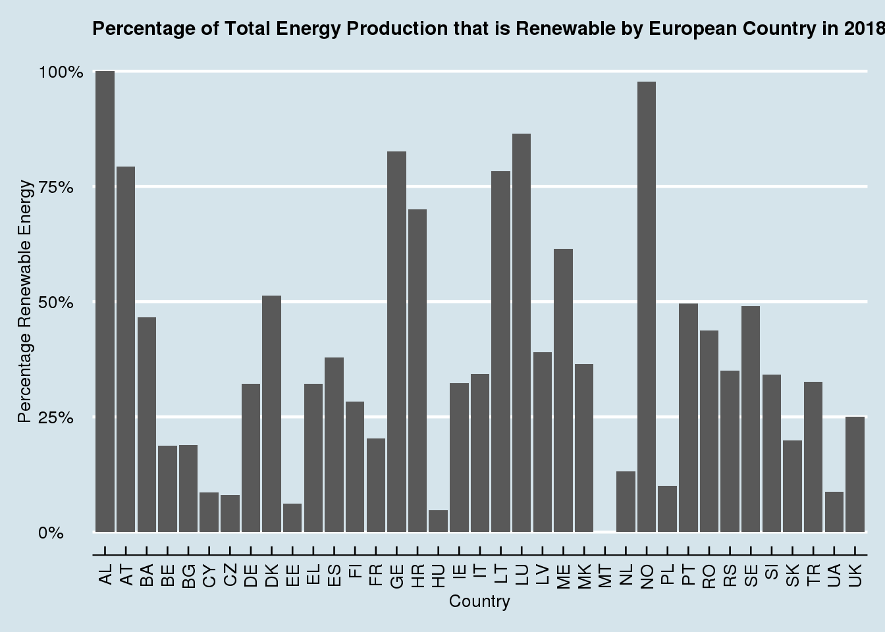

Using data that is available on the Tidy Tuesday website on European Energy, I will investigate the energy usage among European countries with an emphasis on which countries are the best at using renewable energy. I will be examining data from the energy_types.csv file from the Tidy Tuesday website. The data consists of 296 observations and 7 variables. The data displays each the energy production from each European country from 2016-2018 and breaks it down by how much energy was produced by conventional thermal, nuclear, hydroelectric, pumped hydroelectric, wind, solar, geothermal, and other.
The second dataset I will use to explore European Energy production is the country_totals.csv file from the Tidy Tuesday website. The data consists of 185 observations and 7 variables. The data displays the total energy consumption of each European country from
2016-2018 as well as the total energy production of each country.
Which European country had the largest percentage of their total energy production made up of renewable energy in 2018? Which European country had the largest percentage of their total energy production made up of clean energy? To find this, I joined the energy types and country totals datasets. I will also mutate the dataset to combine all of types of energy production that are renewable.
dat <- energy_types %>%
left_join(country_totals, by = c("country", "country_name")) %>%
rename(twenty_16.x = '2016.x', twenty_17.x = '2017.x', twenty_18.x = '2018.x') %>%
filter(type.x == c("Hydro", "Pumped hydro power", "Wind", "Solar", "Geothermal", "Other")) %>%
group_by(country) %>%
summarize(renew_2016 = sum(twenty_16.x), renew_2017 = sum(twenty_17.x), renew_2018 = sum(twenty_18.x)) ## Warning in type.x == c("Hydro", "Pumped hydro power", "Wind", "Solar",
## "Geothermal", : longer object length is not a multiple of shorter object lengthdat2 <- energy_types %>%
filter(type == "Conventional thermal") %>%
rename(twenty_16 = '2016', twenty_17 = '2017', twenty_18 = '2018') %>%
group_by(country) %>%
summarize(conventional_2016 = sum(twenty_16), conventional_2017 = sum(twenty_17), conventional_2018 = sum(twenty_18))
dat3 <- energy_types %>%
filter(type == "Nuclear") %>%
rename(twenty_16 = '2016', twenty_17 = '2017', twenty_18 = '2018') %>%
group_by(country) %>%
summarize(nuclear_2016 = sum(twenty_16), nuclear_2017 = sum(twenty_17), nuclear_2018 = sum(twenty_18))
data_18 <- country_totals %>%
left_join(dat, by = "country") %>%
left_join(dat2, by = "country") %>%
left_join(dat3, by = "country") %>%
filter(type == "Total net production") %>%
select(1, 2, 10, 13 , 16) %>%
mutate(total_2018 = renew_2018 + conventional_2018 + nuclear_2018)
ggplot(data_18, aes(x = country, y = renew_2018/total_2018)) +
geom_bar(stat = "identity") +
scale_y_continuous(labels = scales::percent) +
labs(x = "Country", y = "Percentage Renewable Energy") +
ggtitle("Percentage of Total Energy Production that is Renewable by European Country in 2018") +
theme_economist() +
theme(axis.text.x = element_text(angle = 90, hjust = 1, vjust = 0.5)) +
theme(plot.title = element_text(size = 11))
Which European country has made the biggest shift towards renewable energy since 2016?
Is there a correlation between the European countries with the biggest energy outputs and using more convential thermal energy?